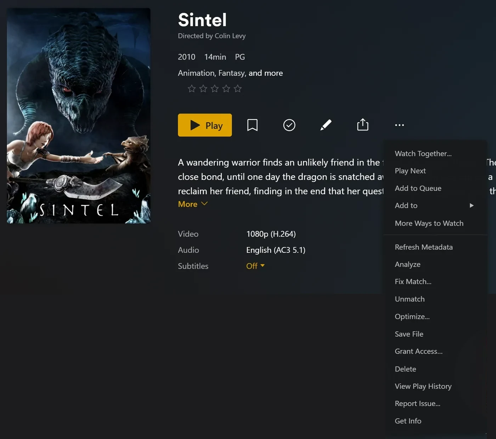

rex con zurg
rex es un servidor multimedia para las apps oficiales de Plex que no es dueño de ningún archivo. Las apps oficiales de Plex lo ven como un servidor Plex normal. Cualquier app puede alimentarlo (rex con tu propia app); esta página lo configura con zurg, que le envía tu biblioteca de debrid, y cuando pulsas play, rex transmite el archivo directamente desde zurg. No se descarga nada primero.
Esta página te lleva de cero a reproducir una película, paso a paso. Cada paso dice qué hace, por qué importa y qué deberías ver antes de avanzar. Si lo que ves no coincide, detente ahí: el siguiente paso no lo arreglará.

Cuatro cosas que conviene saber antes de empezar:
- zurg es la parte que habla con tu servicio de debrid. Lista lo que hay en tu cuenta y sirve los archivos.
- rex es la parte con la que hablan tus apps de Plex. No guarda archivos y no necesita disco para los medios. No necesita rclone ni un montaje.
- zurg le habla a rex sobre sí mismo. Le das a zurg la dirección de rex, y zurg hace el resto. Nunca escribes los datos de zurg en rex.
- zurg y DMM deciden qué es cada archivo; Plex lo describe. zurg le pregunta a DMM qué película o episodio es cada archivo, y rex muestra ese título con los pósters y resúmenes que le da el propio metadato de Plex una vez que rex está en una cuenta de Plex. rex nunca adivina a partir del nombre del archivo.
rex es gratis para uso personal (PolyForm Noncommercial): no hay nivel de patrocinador y no necesitas cuenta para descargarlo. La versión nightly de zurg, que usa esta guía, sigue siendo una versión para patrocinadores; rex con tu propia app ejecuta rex sin ella. ¿Solo tienes un teléfono o una caja para TV? zurg+rex, un servidor Plex en tu teléfono, ejecuta zurg y rex juntos en él: consulta la guía de Android.
Antes de empezar
Esta página necesita rex nightly 2026.10.25 o más reciente y zurg nightly 2026.10.27 o más reciente.
Paso 1. Instalar zurg
Qué hace. Descarga zurg, te pide tu cuenta de debrid y arranca zurg como servicio que vuelve a iniciarse después de un reinicio.
Por qué importa. Todo lo que muestra rex viene de zurg. Si zurg no ve tu biblioteca, rex tampoco la verá nunca.
En Windows y macOS, instala zurg con el instalador de abajo, no en Docker Desktop. rex lee cada archivo desde la dirección que le da zurg, y no puede llegar a un zurg que esté dentro de Docker Desktop: los títulos aparecerían, pero nada se reproduciría.
curl -fsSL https://raw.githubusercontent.com/debridmediamanager/zurg-site/main/public/install.sh | bash
sudo loginctl enable-linger "$USER"zurg va a ~/zurg. La segunda línea mantiene tus servicios funcionando cuando cierras sesión.
curl -fsSL https://raw.githubusercontent.com/debridmediamanager/zurg-site/main/public/install.sh | bashzurg va a ~/zurg. El instalador también instala macFUSE, que macOS puede pedirte que permitas en System Settings, Privacy & Security, seguido de un reinicio: zurg en macOS.
En PowerShell:
irm https://raw.githubusercontent.com/debridmediamanager/zurg-site/main/public/install.ps1 | iexzurg va a $HOME\zurg (C:\Users\you\zurg). El instalador también instala WinFsp, pidiéndote aprobación de administrador, y arranca zurg cada vez que inicias sesión en Windows: zurg en Windows.
El instalador te pregunta qué servicios usas (escribe 1 para Real-Debrid) y después tu token de API. El token queda oculto mientras lo pegas.
Qué deberías ver. El instalador termina con una lista de líneas PASS y ==> zurg is installed in con la carpeta de zurg. Luego zurg carga tu biblioteca: unos segundos para una cuenta pequeña, unos diez minutos para una con mil versiones en Real-Debrid. Abre el panel de zurg en http://<this machine>:9999: Library Size cuenta tus elementos cuando termine.
¿Ya tenías zurg instalado? Actualízalo y reinícialo con cd ~/zurg && ./zurg update && ./zurg service restart (en Windows, cd $HOME\zurg; .\zurg.exe update; .\zurg.exe service restart).
Paso 2. Instalar rex
Qué hace. Descarga rex en ~/rex ($HOME\rex en Windows) y lo inicia como servicio, con todo lo que necesitan los pasos siguientes. Los pasos posteriores a este no necesitan reiniciar; solo las secciones opcionales más abajo sí.
Por qué importa. rex es con lo que hablan tus apps de Plex. El primer inicio crea rex.db, que guarda tus bibliotecas, todo lo que envía zurg y tu historial de reproducción.
En Linux también puedes ejecutar zurg y rex en Docker: mira
mkdir -p ~/rex && cd ~/rex
TAG=$(curl -fsSL 'https://api.github.com/repos/debridmediamanager/rex/releases?per_page=1' | sed -n 's/.*"tag_name": *"\([^"]*\)".*/\1/p' | head -1)
P=$(uname -s | tr A-Z a-z)-$(uname -m | sed 's/x86_64/amd64/;s/aarch64/arm64/')
curl -fL "https://github.com/debridmediamanager/rex/releases/download/$TAG/rex-$TAG-$P.tar.gz" | tar xz --strip-components=1En PowerShell:
New-Item -ItemType Directory -Force $HOME\rex | Out-Null; cd $HOME\rex
$tag = (Invoke-RestMethod 'https://api.github.com/repos/debridmediamanager/rex/releases?per_page=1')[0].tag_name
curl.exe -fLO "https://github.com/debridmediamanager/rex/releases/download/$tag/rex-$tag-windows-amd64.zip"
tar -xf "rex-$tag-windows-amd64.zip" --strip-components=1; Remove-Item "rex-$tag-windows-amd64.zip"Esto descarga la compilación más reciente de rex, normalmente una nightly, para tu máquina.
Busca la IP de LAN de rex, su dirección en tu red de casa. En Linux hostname -I muestra varias: quédate con la de tu red de casa, no con una que empiece por 172.17. (Docker) o 100. (Tailscale). En macOS ipconfig getifaddr en0 la muestra (en1 si no muestra nada). En Windows ipconfig la lista como IPv4 Address bajo tu adaptador Wi-Fi o Ethernet. Esta página la escribe como 192.168.1.20 en todas partes: pon la tuya en su lugar. Las apps de Plex, zurg y tus propios comandos llegan a rex por ahí.
¿Plex Media Server corre en la misma máquina? Termina el comando de inicio de rex con --port 32500 y usa 32500 en cualquier comando o ajuste donde diga 32400, incluida la regla del firewall de Windows: Plex ya usa el puerto 32400 y los puertos que las apps usan para encontrar servidores, y en cualquier otro puerto rex deja esos a Plex. Entonces tus apps listarán dos servidores con el nombre de la máquina: rex es el que se comparte contigo, con el nombre de la cuenta nueva al lado. Cuando rex esté en su cuenta de Plex (
Ahora conviértelo en servicio:
Crea ~/.config/systemd/user/rex.service:
mkdir -p ~/.config/systemd/user
nano ~/.config/systemd/user/rex.service[Unit]
Description=rex
After=network-online.target
[Service]
WorkingDirectory=%h/rex
EnvironmentFile=-%h/rex/rex.env
ExecStart=%h/rex/rex
Restart=always
RestartSec=5
[Install]
WantedBy=default.targetsystemctl --user daemon-reload
systemctl --user enable --now rex
journalctl --user -u rex -fEl comando de inicio de rex es la línea ExecStart, y las claves van en ~/rex/rex.env, una NAME=value por línea. Después de un cambio, systemctl --user daemon-reload && systemctl --user restart rex reinicia rex. journalctl --user -u rex -f muestra su log.
run.sh inicia rex en su carpeta, y un LaunchAgent inicia run.sh cuando inicias sesión:
cp ~/rex/examples/run.sh.example ~/rex/run.sh
mkdir -p ~/Library/LaunchAgents
cat > ~/Library/LaunchAgents/com.rex.plist <<PLIST
<?xml version="1.0" encoding="UTF-8"?>
<!DOCTYPE plist PUBLIC "-//Apple//DTD PLIST 1.0//EN" "http://www.apple.com/DTDs/PropertyList-1.0.dtd">
<plist version="1.0"><dict>
<key>Label</key><string>com.rex</string>
<key>ProgramArguments</key><array><string>/bin/bash</string><string>$HOME/rex/run.sh</string></array>
<key>RunAtLoad</key><true/><key>KeepAlive</key><true/>
<key>StandardOutPath</key><string>$HOME/rex/rex.log</string>
<key>StandardErrorPath</key><string>$HOME/rex/rex.log</string>
</dict></plist>
PLIST
launchctl load ~/Library/LaunchAgents/com.rex.plist
tail -F ~/rex/rex.logEl comando de inicio de rex es la última línea de ~/rex/run.sh, y las claves van en ~/rex/rex.env, una NAME=value por línea. Después de un cambio, launchctl kickstart -k gui/$(id -u)/com.rex reinicia rex. tail -f ~/rex/rex.log muestra su log.
rex funciona mientras tengas sesión iniciada en el Mac. Para un Mac que se reinicia solo, activa el inicio de sesión automático (System Settings, Users & Groups). Si el firewall de macOS está activado, permite rex cuando macOS lo pida, o añade ~/rex/rex en Options del firewall.
Abre PowerShell como administrador y ve a la carpeta de rex con cd $HOME\rex. Primero crea run.cmd, que inicia rex en su carpeta y escribe su log en rex.log. Bloc de notas te ofrece crear el archivo:
notepad run.cmd@echo off
cd /d "%~dp0"
rex.exe 2>> rex.logGuárdalo. Luego deja pasar tu red por el Firewall de Windows hacia el puerto de rex y los dos puertos de descubrimiento, e inicia rex ahora y cada vez que inicies sesión:
New-NetFirewallRule -DisplayName rex -Protocol TCP -LocalPort 32400
New-NetFirewallRule -DisplayName "rex discovery" -Protocol UDP -LocalPort 32410,32414
$settings = New-ScheduledTaskSettingsSet -ExecutionTimeLimit 0 -AllowStartIfOnBatteries -DontStopIfGoingOnBatteries
Register-ScheduledTask rex -Action (New-ScheduledTaskAction -Execute "$HOME\rex\run.cmd") -Trigger (New-ScheduledTaskTrigger -AtLogOn -User $env:USERNAME) -Settings $settings
Start-ScheduledTask rex; Start-Sleep 3
Get-Content rex.log -WaitEl comando de inicio de rex es la línea rex.exe de run.cmd, y las claves van encima, una set NAME=value por línea. Después de un cambio, Stop-Process -Name rex; Start-Sleep 1; Start-ScheduledTask rex reinicia rex. Get-Content $HOME\rex\rex.log -Wait muestra su log.
¿Iniciaste rex a mano en PowerShell? Entonces su log solo está en esa ventana, sin rex.log, y ninguna tarea lo inicia tras un reinicio. rex guarda su base de datos y su reclamación en la carpeta desde la que arranca, así que un rex iniciado desde otra carpeta es un servidor nuevo, sin reclamar. Deténlo con Ctrl+C, y luego inícialo de nuevo desde la carpeta de rex con los mismos flags, o mejor, configura la tarea de arriba.
rex funciona mientras tengas sesión iniciada en Windows, en una ventana propia: déjala abierta. En PowerShell, escribe curl.exe donde esta página diga curl: el curl propio de Windows PowerShell es otro comando.
Lo que deberías ver. Entre las primeras líneas:
INFO seeded rex.db: an empty library named yourhost, machine=...
INFO no source yet: a source registers itself once pointed at this server (PUT /rex/sources/{name}, docs/feed-api.md)
INFO claim state: unclaimed
INFO rex on http://192.168.1.20:32400 machine=... items=0 parts=proxyrex se llama como la máquina; tus apps de Plex muestran ese nombre. no source yet es lo normal: zurg todavía no sabe nada de rex. Deja el log abierto.
Paso 3. Añádelo a una cuenta de Plex
Qué hace. Registra rex en una cuenta de Plex, igual que lo harías con un Plex Media Server real, y lo comparte con tu propia cuenta.
Por qué importa. rex obtiene el nombre, el póster, la sinopsis y los nombres de los episodios de cada título a partir de los metadatos de Plex, y solo puede consultar a Plex una vez que está en una cuenta. Los títulos que zurg envió antes de la vinculación se nombran en cuanto esta se completa. También hace que Fix Match funcione, elimina el aviso de "unclaimed" y es necesario antes de
Usa una cuenta nueva de Plex para esto, no la tuya. rex no lo hace Plex, y Plex podría tomar medidas contra una cuenta que lo registre. Mantén tu cuenta real, con su historial de reproducción, amigos y cualquier Plex Pass, fuera de peligro: crea una cuenta gratuita nueva en plex.tv con una dirección de correo que no uses en ningún otro sitio, registra rex en esa cuenta y compártelo con tu propia cuenta. Así reproduces con tu sesión iniciada como tú mismo, igual que verías el servidor de un amigo. rex no reproduce nada hasta que completes este paso.
Registra rex en la cuenta nueva
- Inicia sesión en plex.tv con la cuenta nueva, abre plex.tv/claim y copia el código. Caduca en unos cinco minutos.
-
En la máquina de rex (
curl.exeen Windows):curl -X POST "http://192.168.1.20:32400/myplex/claim?token=claim-xxxxxxxxxxxx" curl -s http://192.168.1.20:32400/identity
Qué deberías ver. El segundo comando muestra claimed="1", y el archivo claim_state.json existe en la carpeta de rex. Haz una copia de seguridad de ese archivo: sin él tendrás que volver a vincular con un código nuevo. Mientras exista, rex no acepta una segunda vinculación.
Compártelo con tu propia cuenta
- Todavía con la sesión iniciada en la cuenta nueva, abre app.plex.tv, luego Settings (la llave inglesa), Manage Library Access y Grant Library Access.
- Escribe el nombre de usuario o el correo de tu propia cuenta, elige el servidor de rex y ambas bibliotecas, Movies y TV Shows, y envía la invitación.
- Cierra la sesión, inicia sesión como tú mismo y acepta la invitación. Llega por correo y en app.plex.tv.


Qué deberías ver. Con la sesión iniciada como tú, las apps de Plex muestran el servidor de rex junto a tus propios servidores, con ambas bibliotecas, vacías hasta el siguiente paso. Tu historial de reproducción en rex es tuyo: se guarda aparte del de la cuenta nueva. Compártelo de la misma forma con cualquier otra persona de tu casa.
Paso 4. Conectar zurg a rex
Qué hace. Le indica a zurg dónde está rex. zurg se presenta ante rex, le envía toda su biblioteca, lee los detalles de vídeo y audio de cada archivo y también los envía, y después envía cada cambio según ocurre.
Por qué importa. Este es el único vínculo entre los dos. rex no tiene ninguna opción para zurg: si falta rex_url, rex se queda vacío. rex_url siempre es la dirección http:// sin cifrar de rex en tu red, nunca una HTTPS de
zurg no arranca con la misma clave dos veces, y el panel de zurg escribe dmm_api_key en su configuración cuando introduces tu clave allí. Si no tienes clave de DMM, deja dmm_api_key fuera.
Primero comprueba si la configuración de zurg ya tiene alguna de estas dos líneas:
grep -n '^rex_url:\|^dmm_api_key:' ~/zurg/config.ymlSi imprime una línea, esa clave ya está configurada: cámbiala ahí con nano ~/zurg/config.yml y no la incluyas en el printf de abajo.
printf '\nrex_url: http://192.168.1.20:32400\ndmm_api_key: your_dmm_key\n' >> ~/zurg/config.yml
cd ~/zurg && ./zurg service restartAbre la configuración de zurg con notepad $HOME\zurg\config.yml. Si ya tiene una línea rex_url: o dmm_api_key:, cambia esa línea; añade las demás al final:
rex_url: http://192.168.1.20:32400
dmm_api_key: your_dmm_keyGuárdalo y reinicia zurg:
cd $HOME\zurg; .\zurg.exe service restartQué deberías ver. Cuando zurg vuelva a cargar la biblioteca, el log de zurg (~/zurg/logs/zurg.log, en Windows $HOME\zurg\logs\zurg.log) dirá DMM placed N releases (sin clave de DMM: Placed N releases by their names (no DMM sponsor key)) y el log de rex mostrará:
INFO SOURCES zurg registered at http://192.168.1.20:9999/dav
INFO SOURCES PUT /rex/sources/zurg -> 200
INFO FEED zurg upsert: 0 created, 0 updated, 200 held, 0 unchanged, 0 rejected
INFO FEED identified "Sintel.mp4" -> movie tmdb:45745 (placed)
INFO FEED zurg upsert: 2 created, 0 updated, 0 held, 0 unchanged, 0 rejectedrex lee cada archivo desde la dirección de la línea registered at, así que debe poder llegar a zurg en esa dirección. rex vuelve a registrar esa línea solo cuando cambia la dirección.
held significa que zurg todavía no ha leído los detalles de ese archivo. zurg empieza a leerlos en cuanto su biblioteca se ha cargado, una publicación a la vez, y los episodios de un pack de temporada llegan juntos. Con una clave de DMM, hasta unas 20 publicaciones por minuto llegan desde los detalles almacenados de DMM. Una biblioteca grande tarda varias horas en llenarse. Cada título aparece en rex en cuanto llegan sus detalles. Lo que añadas más tarde a tu cuenta de debrid aparecerá solo cuando zurg lo haya leído.
Si no aparece eso.
-
Nada en absoluto en el log de rex: zurg todavía está cargando su biblioteca, zurg está desactualizado (actualízalo como en el
paso 1 ) orex_urltiene una errata.grep 'rex feed' ~/zurg/logs/zurg.log | tail -n 5muestra la parte de zurg (en Windows,Select-String 'rex feed' $HOME\zurg\logs\zurg.log | Select-Object -Last 5): si no aparece ninguna línearex feed: pushing the library to ..., zurg no leyórex_url, yrex feed: snapshot failed, retrying in ...significa que no puede llegar a rex en esa dirección. -
Un título se queda en
heldy zurg registraCannot probe file ...: la primera lectura desde el servicio de debrid falló. zurg lo vuelve a intentar por sí mismo; Analyze & Tag Library en Utilities del panel de zurg lo intenta de inmediato.
-
Los títulos llegan pero no hay líneas
identified: zurg no pudo emparejarlos por nombre, y condmm_api_keyconfigurada registraDMM refused the API key for placementcuando la clave no es de un patrocinador. Entonces zurg empareja por nombre y vuelve a probar la clave un día después, o de inmediato al reiniciarse. -
Los títulos aparecen pero no se reproduce nada: rex no puede llegar a zurg en la dirección de
registered at. La filaupstream faileddeCuando algo va mal lo comprueba.
¿Ejecutas varios zurg (uno por servicio de debrid)? Dale a cada uno su propio nombre con una línea extra, rex_source: rd, rex_source: tb y así sucesivamente. Llenan las mismas bibliotecas.
Por qué DMM coloca los archivos
File names often number episodes differently from the episode lists Plex apps show. DMM knows where each file really belongs:
Un archivo que zurg no puede ubicar queda sin coincidencia: una película con el título de su archivo, o un episodio de una serie con el nombre de su release, numerado según el orden de los archivos. Si tienes una DMM key, zurg vuelve a preguntarle a DMM sobre él un día después, y tú puedes corregirlo a mano con Fix Match en una app de Plex, con sesión iniciada en la cuenta nueva que es dueña de rex (rex lo rechaza para las cuentas con las que está compartido). Un título que corregiste con Fix Match se queda como lo configuraste.


El dashboard de zurg muestra lo que hizo con cada release: abre el release en Torrent Manager y mira Placement. Place again vuelve a preguntarle a DMM, y un id de IMDb escrito en External ID lo ubica usando ese id.

Paso 5. Mira algo
Qué hace. Abre rex en una app de Plex, igual que harías con cualquier servidor de Plex.
Por qué importa. Este es el objetivo de toda la configuración. Además, confirma el último eslabón: rex leyendo un archivo de zurg mientras miras.
Abre una app de Plex (no un navegador web) en un teléfono, una TV o un ordenador en la misma red doméstica. rex aparece con el nombre de la máquina, con Movies y TV Shows. Elige una película y pulsa play.

En casa no hace falta nada más: las apps de Plex encuentran rex con el descubrimiento local propio de Plex y se conectan a él por tu red. Eso requiere que el dispositivo esté en la misma red que rex (no en una Wi-Fi de invitados ni en una VLAN separada). El descubrimiento usa los puertos UDP 32410 y 32414, así que un cortafuegos en la máquina de rex debe permitirlos (en Windows, las reglas de cortafuegos del paso 2 lo hacen). rex responde al descubrimiento cuando usa el puerto 32400. Si cambiaste rex al 32500 porque Plex se ejecuta en la misma máquina, el descubrimiento queda en manos de ese Plex, y las apps encuentran rex a través de la cuenta de Plex con la que está http://192.168.1.20:32400/web no es Plex Web: rex no tiene una app web propia, y esa página solo indica si rex está reclamado y dónde ver contenido.
Qué deberías ver. Pósters, títulos y años como en cualquier servidor de Plex, y la película se reproduce.
Dos cosas con las que te puedes encontrar:
- "yourhost server is unclaimed and not secure". Una app de Plex dice esto de cualquier servidor que no está en una cuenta de Plex, y rex no reproduce nada hasta que esté en una. Haz el
paso 3 . No pulses Claim it now con tu propia sesión iniciada: registraría rex en tu cuenta. - "This server is not powerful enough to convert video". Si todos los títulos fallan en todos los dispositivos, mira el log de rex justo después de pulsar Play: si aparece
upstream failedo502, rex no puede conectar con zurg, y FFmpeg no lo arreglará. La filaupstream faileddeCuando algo va mal indica qué hacer. Si solo fallan algunos archivos, a menudo solo en un navegador web, el dispositivo no puede reproducirlos tal cual, normalmente por sonido AC3 o DTS. Las apps de Plex en TV y móvil reproducen la mayoría de archivos tal cual. Para reproducir todo en todas partes, configuraConversión de vídeo .
Las carpetas de zurg distintas de movies y shows, como anime, no necesitan nada: cada archivo va a Movies o TV Shows según lo que zurg diga que es. Un archivo que zurg no puede identificar como episodio acaba en Movies.
Para dar a una de esas carpetas bibliotecas propias, añade rex_movies bajo ella en el config.yml de zurg para una carpeta de películas, rex_shows para una carpeta de series, y ambas solo si contiene las dos, junto a sus filtros, y luego reinicia zurg como en el rex_shows genera una biblioteca de TV vacía. DMM coloca parte de los archivos de una carpeta como películas y parte como episodios, y el tipo que no tiene título propio va a Movies o TV Shows:
directories:
anime:
rex_shows: Anime
rex_movies: Anime Movies
films:
rex_movies: FilmsUna vez que zurg se ha cargado, rex crea Anime, Anime Movies y Films y traslada a ellas lo que ya mostraba desde anime, tal cual: historial de reproducción, Fix Match y ediciones incluidas. Un Plex Web abierto las muestra de inmediato bajo More en su barra lateral, donde puedes fijarlas. Compártelas con tu cuenta como en rex_shows o rex_movies de la configuración de zurg, rex mantiene la biblioteca que creó para ella, vacía o no: elimínala en una app de Plex, con sesión iniciada con la cuenta nueva. Si una biblioteca no aparece, el log de zurg o el de rex indica por qué.

Borrar en una app de Plex borra de tu cuenta de debrid
Con sesión iniciada con la cuenta nueva, Delete en una película o episodio también borra su archivo en zurg, y zurg elimina el torrent de tu cuenta de debrid cuando no queda ninguno de sus archivos. Las cuentas con las que rex está compartido, incluida la tuya, no pueden borrar. Para desactivar el borrado: en app.plex.tv con la cuenta nueva, abre Settings, la Library del servidor rex, Show Advanced, desmarca Allow media deletion y guarda. rex entonces rechaza todos los borrados.

Un título que sale de tu cuenta de debrid por el otro camino, quitado allí o por zurg, va a la papelera de la biblioteca en rex, igual que en Plex: se queda, no disponible, con su historial de reproducción, y vuelve tal como estaba si zurg lo tiene otra vez. Empty Trash en la biblioteca lo elimina de forma definitiva, y Empty trash automatically after every scan (Settings, Library) lo hace solo; está desactivado.
Haz copia de seguridad de rex.db en la carpeta de rex (contiene tu biblioteca, el historial de reproducción y el login de zurg, así que mantenlo privado) y, una vez que los tengas, claim_state.json y rex-direct.json (el reclamo y la clave del certificado de rex-direct):
sudo apt install -y sqlite3 # once, on Linux; macOS has it
mkdir -p ~/rex-backup
sqlite3 ~/rex/rex.db ".backup $HOME/rex-backup/rex.db"
cp ~/rex/*.json ~/rex-backup/Windows no tiene sqlite3, así que detén rex un momento y copia rex.db junto con los dos archivos que empiezan igual:
Stop-Process -Name rex; Start-Sleep 1
New-Item -ItemType Directory -Force $HOME\rex-backup | Out-Null
Copy-Item $HOME\rex\rex.db*, $HOME\rex\*.json $HOME\rex-backup
Start-ScheduledTask rexEn Docker los archivos están en ~/rex/config, legibles solo por root. Haz la copia desde dentro del contenedor con docker exec rex sqlite3 /config/rex.db ".backup /config/rex.db.bak", y después mkdir -p ~/rex-backup && sudo cp ~/rex/config/rex.db.bak ~/rex/config/*.json ~/rex-backup/.
Ya está. Las secciones siguientes son opcionales.
Úsalo fuera de casa (opcional)
Qué hace. Le da a rex una dirección HTTPS a la que pueden acceder las apps de Plex fuera de casa, y se la comunica a plex.tv.
Por qué importa. Fuera de casa, app.plex.tv solo se conecta a una dirección HTTPS, y las otras apps de Plex prefieren una también. Un servidor de Plex real puede recurrir al relay de Plex; rex no puede, así que tú eliges cómo se accede. rex debe estar /rex/ (
Plex Pass. Plex Web reproduce fuera de casa sin un Plex Pass o un Remote Watch Pass en ninguna de las dos cuentas. Las otras apps de Plex no se han probado fuera de casa.
Elijas la opción que elijas, cada byte que veas fuera de casa sale por la velocidad de subida de tu conexión de casa. Una subida de 20 Mbit/s aguanta un 1080p WEB-DL sin problemas, pero no un remux.
Cuál usar
No recomendado:
- Túnel de Cloudflare. Cada byte pasa por Cloudflare, que además descarta el
Rangede la primera lectura de un archivo, así que cada inicio de reproducción descarga el archivo entero desde tu servicio debrid. - Tailscale Funnel, ngrok y otros túneles alojados. Limitan el ancho de banda o los datos mensuales, que una película consume rápido. Tailscale Funnel además publica todo rex, incluida la API a la que envía datos zurg: cualquiera en internet podría añadir o borrar cosas de esa biblioteca.
- Reenviar el puerto 32400 sin rex-direct ni un certificado propio. Las apps de Plex recibirían una dirección HTTP sin cifrar, que app.plex.tv rechaza.
rex-direct
rex-direct es la respuesta de DMM a plex.direct, y viene activado por defecto. En tu router, reenvía el puerto 32400 (TCP) a la máquina de rex. Eso es todo, sin necesidad de reiniciar nada.
Una vez reclamado, DMM le asigna a rex dos nombres: <hash>.rex-direct.debridmediamanager.com, apuntando a la IP pública de tu casa, y lan.<hash>.rex-direct.debridmediamanager.com, apuntando a la IP de rex en tu red local, con un certificado para ambos. El primer certificado tarda unos minutos; el log de rex indica que se está emitiendo y luego muestra cada nombre en una línea rex-direct:. Una nueva IP de casa y las renovaciones de certificados se detectan solas. Una misma cuenta de Plex puede tener hasta diez nombres rex-direct. En casa, las apps de Plex, incluida app.plex.tv, pueden usar el nombre lan., que llega a rex directamente por tu red, así que el reenvío de puerto solo hace falta fuera de casa. En app.plex.tv, permite el acceso a los dispositivos de tu red local cuando Chrome lo pida; si no, se usa el nombre público, que sí necesita el reenvío de puerto.
Si tu router reenvía a rex un puerto externo distinto, añade la clave REX_DIRECT_PORT=<that port> como muestra el
rex-direct sobre IPv6
Para una conexión sin IPv4 público (CGNAT o DS-Lite) que sí tiene IPv6. Una vez que DMM se ha conectado a rex por su dirección IPv6 y ha encontrado allí el mismo servidor, apunta también a esa dirección el nombre rex-direct de rex. Necesitas rex nightly 2026.11.08 o posterior y, en Docker, red del host (host networking).
IPv6 no tiene reenvío de puertos ni mapeo de puertos: rex debe usar el mismo puerto por dentro y por fuera, así que deja REX_DIRECT_PORT sin definir. En el firewall de tu router, permite las conexiones TCP entrantes al puerto 32400 hacia la máquina de rex por IPv6. rex ofrece su IPv6 un minuto después de arrancar (o de ser reclamado) y luego cada 6 horas, así que añade la regla antes de iniciar rex, o reinicia rex después de añadirla. Un minuto más o menos después, su log muestra ambas direcciones:
rex-direct: https://<hash>.rex-direct.debridmediamanager.com:32400 -> <IPv4> and <IPv6>Si no aparece ninguna línea con and <IPv6> en unos pocos minutos, DMM no pudo llegar a rex por IPv6: revisa la regla del firewall y que rex en Docker use red del host. En Windows, rex ofrece la dirección IPv6 temporal de Windows, que Windows reemplaza aproximadamente cada día: desactiva las direcciones temporales con netsh interface ipv6 set privacy state=disabled en un PowerShell como administrador, y luego reinicia rex para que ofrezca la estable. El <IPv4> de esa línea es la dirección compartida de tu proveedor y no llega a rex, así que los dispositivos desde los que veas el contenido también necesitan IPv6. La mayoría de las redes móviles lo tienen; una red de hotel u oficina solo con IPv4 no podrá llegar a rex de esta forma.
Tailscale serve
Instala Tailscale en la máquina de rex y en los dispositivos desde los que ves contenido, con sesión iniciada en la misma cuenta. Luego, en la máquina de rex:
sudo tailscale serve --bg 32400En Windows, ejecútalo en PowerShell como administrador, sin sudo. En macOS, usa la herramienta de línea de comandos de la aplicación de Tailscale, también sin sudo.
Muestra la dirección, por ejemplo https://myhost.tailnet.ts.net. Dásela a rex añadiendo :443: termina el comando de inicio de rex del --announce-url https://myhost.tailnet.ts.net:443 y reinicia rex.
Tailscale conecta tus dispositivos entre sí directamente, así que el flujo no pasa por los servidores de Tailscale, salvo en las redes que lo bloqueen.
Caddy
Necesitas reenviar el puerto 443 de tu router a la máquina de rex, y un nombre para la IP de tu casa:
- Tu propio dominio: un registro
A, por ejemplorex.example.com, que apunte a la IP de tu casa. - Sin dominio: usa
1-2-3-4.sslip.iocon los números de tu IP pública (curl -s ifconfig.mete la muestra). Siempre resuelve a esa IP. Si tu IP cambia, actualiza el nombre.
Instala Caddy y dale este Caddyfile (/etc/caddy/Caddyfile con el paquete de Caddy para Linux; en macOS y Windows, un archivo llamado Caddyfile en una carpeta propia, que caddy run lee desde esa carpeta):
rex.example.com {
respond /rex/* 403
reverse_proxy 192.168.1.20:32400
}respond /rex/* 403 mantiene la API a la que zurg envía datos fuera de internet. zurg sigue llegando a ella en http://192.168.1.20:32400. Después recarga Caddy (sudo systemctl reload caddy con el paquete de Linux). En macOS y Windows, inicia caddy run en su carpeta y mantenlo en ejecución como lo mantienes con rex en el
Caddy obtiene un certificado al cargar el archivo y lo renueva solo. Añade --announce-url https://rex.example.com:443 al final del comando de inicio de rex y reinicia rex.
Un VPS pequeño
Para una conexión sin IP pública, o cuando miras desde redes sin IPv6, el VPS transporta todos los streams, en lugar de
Necesitas la IP del VPS (1.2.3.4 abajo), los puertos 443, 80 y 7000 abiertos en él, y una cadena aleatoria larga para el túnel (openssl rand -hex 32).
En el VPS, instala frp (el programa frps) y Caddy. Crea frps.toml:
bindPort = 7000
auth.token = "your-long-random-string"
proxyBindAddr = "127.0.0.1"proxyBindAddr mantiene el extremo del túnel en el loopback del VPS, así que internet solo llega a rex a través de Caddy. Crea /etc/caddy/Caddyfile, con la IP del VPS como 1-2-3-4.sslip.io (un nombre gratuito que siempre apunta a esa IP) o con tu propio dominio apuntando a ella:
1-2-3-4.sslip.io {
respond /rex/* 403
reverse_proxy 127.0.0.1:32400
}respond /rex/* 403 mantiene la API a la que envía datos zurg fuera de internet. Inicia frps -c frps.toml como servicio y ejecuta sudo systemctl reload caddy.
En la máquina de rex, instala también frp (el programa frpc) y crea frpc.toml:
serverAddr = "1.2.3.4"
serverPort = 7000
auth.token = "your-long-random-string"
[[proxies]]
name = "rex"
type = "tcp"
localIP = "192.168.1.20"
localPort = 32400
remotePort = 32400Ejecútalo como servicio: en Linux, por ejemplo ~/.config/systemd/user/frpc.service con ExecStart=%h/frp/frpc -c %h/frp/frpc.toml y Restart=always; en macOS y Windows, inicia frpc -c frpc.toml igual que --announce-url https://1-2-3-4.sslip.io:443, añade la clave REX_DIRECT_URL=off (detrás de CGNAT, la IPv4 del nombre rex-direct no llega a rex, así que plex.tv no debería listarlo) y reinicia rex. app.plex.tv desde casa pasará entonces también por el VPS; las demás apps de Plex en casa seguirán conectándose directamente a rex.
Lo que deberías ver
curl -s https://lan.<hash>.rex-direct.debridmediamanager.com:32400/identitymuestra una página XML corta con el machineIdentifier de rex en un ordenador de casa; curl no muestra nada cuando la dirección o su certificado están mal. Usa tu propia dirección: rex la registra al arrancar como rex-direct: https://lan.<hash>.rex-direct.debridmediamanager.com:32400 -> 192.168.1.20 (LAN) (con REX_DIRECT_URL=off no aparece ninguna). Abre tu dirección externa con /identity añadido en el navegador de un teléfono con el Wi-Fi apagado: con rex-direct es la otra línea rex-direct: de rex, y con Tailscale serve https://myhost.tailnet.ts.net, que el teléfono abre solo con Tailscale encendido. Debe mostrar una página XML corta sin aviso de certificado.
Si el teléfono falla, el puerto no está reenviado (o,
El log de rex nombra las direcciones que anuncia:
INFO heartbeat every 600s for machine ... -> https://myhost.tailnet.ts.net:443,http://192.168.1.20:32400rex imprime esto en cada arranque. Los problemas aparecen luego como heartbeat failed o announced but NOT visible. Si no, el servidor muestra esas direcciones en plex.tv, y una app de Plex fuera de casa elige la que pueda alcanzar. Si rex registra waiting for a claim, haz primero el
Tu historial de visualización de otro servidor de Plex (opcional)
¿Ya lo viste en otro servidor de Plex? Una vez que tu biblioteca esté en rex, Trae tu historial de visualización copia lo que viste, dónde te quedaste y tus calificaciones con estrellas, para cada persona por separado.
Sonarr, Radarr y Bazarr (opcional)
rex no necesita montaje, pero Sonarr y Radarr sí: importan en el montaje de zurg, bajo __magic__. Configúralos con zurg tal como muestran Sonarr y Radarr para torrents o para Usenet; lo que descarguen llega a rex a través de zurg como cualquier otra cosa. Los subtítulos que Bazarr guarda junto a esas importaciones aparecen en rex en aproximadamente un minuto: Subtítulos con Bazarr. Un mismo zurg puede contener tu cuenta de debrid y Usenet en una sola biblioteca (Usenet), y dos copias de una misma película son un solo título en rex, con una versión por cada una.
Convertir vídeo (opcional)
Qué hace. Permite que rex convierta lo que un dispositivo no puede reproducir, igual que lo hace Plex.
Por qué importa. Sin esto, un dispositivo que no puede reproducir un archivo tal cual muestra "This server is not powerful enough to convert video". Los navegadores web son los que más lo sufren, por ejemplo con sonido AC3 o DTS. Cuando todos los títulos fallan en todos los dispositivos, la causa es otra: consulta el
Instala jellyfin-ffmpeg 8, no el ffmpeg que ofrece tu sistema: es la versión con la que se mide rex y la única que convierte todos los archivos Dolby Vision, hace tone mapping de HDR en la gráfica y dibuja los subtítulos allí. Otro FFmpeg convierte vídeo normal, y el log de rex te dice qué le falta (el de Ubuntu 22.04 además se desplaza unos segundos). rex lo encuentra por su cuenta.
El paquete va en /usr/lib/jellyfin-ffmpeg, junto a cualquier otro FFmpeg. La primera línea elige la versión para tu sistema: hay versiones para Ubuntu 22.04, 24.04 y 26.04 y Debian 12 y 13, en amd64 o arm64, y en cualquier otro curl se detiene con un error.
DEB=jellyfin-ffmpeg8_8.1.3-1-$(. /etc/os-release; echo "$VERSION_CODENAME")_$(dpkg --print-architecture).deb
curl -fLO "https://github.com/jellyfin/jellyfin-ffmpeg/releases/download/v8.1.3-1/$DEB"
sudo apt install -y "./$DEB" && rm "$DEB"
systemctl --user restart rexEn otro Linux, descomprime la versión portable de jellyfin-ffmpeg en ~/rex/ffmpeg, donde rex la busca, y reinicia rex. Usa el controlador gráfico de tu propio sistema, así que en un sistema antiguo convierte solo con el procesador; usa el paquete siempre que exista.
B=$( [ "$(uname -m)" = aarch64 ] && echo linuxarm64 || echo linux64 )
mkdir -p ~/rex/ffmpeg && curl -fL "https://github.com/jellyfin/jellyfin-ffmpeg/releases/download/v8.1.3-1/jellyfin-ffmpeg_8.1.3-1_portable_${B}-gpl.tar.xz" | tar xJ -C ~/rex/ffmpegCon una gráfica Intel o AMD, ejecuta también sudo usermod -aG render "$USER" y reinicia para que el servicio obtenga el grupo; en un LXC, pasa la GPU al contenedor. La gráfica hace la conversión rápida; sin ella, rex usa el procesador. Sin gráfica Intel ni AMD, rex también prueba el codificador de una tarjeta NVIDIA. En Intel, sudo apt install intel-opencl-icd también convierte HDR y Dolby Vision en la gráfica, a casi tiempo real para 4K en un Intel pequeño; sin él, se convierten en el procesador, y un Intel de bajo consumo no puede hacerlo en tiempo real a 4K.
La versión portable va en ~/rex/ffmpeg, donde rex la busca:
B=$( [ "$(uname -m)" = arm64 ] && echo macarm64 || echo mac64 )
mkdir -p ~/rex/ffmpeg && curl -fL "https://github.com/jellyfin/jellyfin-ffmpeg/releases/download/v8.1.3-1/jellyfin-ffmpeg_8.1.3-1_portable_${B}-gpl.tar.xz" | tar xJ -C ~/rex/ffmpeg
launchctl kickstart -k gui/$(id -u)/com.rexEn un Mac, rex siempre convierte con el procesador: no tiene forma de usar la gráfica del Mac.
La versión portable va en una carpeta ffmpeg dentro de la carpeta de rex, donde rex la busca:
cd $HOME\rex
curl.exe -fLO https://github.com/jellyfin/jellyfin-ffmpeg/releases/download/v8.1.3-1/jellyfin-ffmpeg_8.1.3-1_portable_win64-clang-gpl.zip
Expand-Archive jellyfin-ffmpeg_8.1.3-1_portable_win64-clang-gpl.zip ffmpeg
Remove-Item jellyfin-ffmpeg_8.1.3-1_portable_win64-clang-gpl.zip
Stop-Process -Name rex; Start-Sleep 1; Start-ScheduledTask rexEn Windows, rex convierte con el codificador de una tarjeta NVIDIA cuando hay una, y con el procesador en caso contrario.
Qué deberías ver. El log de rex tiene una línea transcoder: que indica el FFmpeg y el hardware que encontró (hardware none significa el procesador); transcoder off al arrancar significa que no encontró ninguno. Un archivo que antes fallaba ahora se reproduce; el log muestra lo que se convirtió, por ejemplo video=copy h264 audio=ac3->aac 6ch.
Subtítulos en un archivo convertido: un subtítulo de imagen se quema en la imagen y un subtítulo que subiste se mantiene. Plex para Android e iOS también conserva un subtítulo de texto como pista; otras apps lo dibujan en la imagen. Las descargas sin conexión convertidas siguen sin incluir subtítulos de texto.
Subtítulos
Qué hace. La búsqueda de subtítulos en una app de Plex encuentra subtítulos del proveedor propio de Plex una vez que rex está vinculado. rex comprueba el que elijas contra el archivo y corrige su sincronización cuando va retrasado o cuando está hecho para otra tasa de fotogramas. Si tu cuenta de Plex está configurada para mostrar subtítulos y un título no tiene ninguno en tu idioma, rex busca uno durante hasta 3 segundos antes de empezar.
Por qué importa. El primer resultado del propio Plex suele estar desincronizado con el archivo.

No hay nada que configurar. rex comprueba un subtítulo contra el subtítulo de texto propio del archivo cuando lo tiene. Un archivo sin uno se comprueba contra su audio cuando pulsas play, lo que necesita tener configurado
Qué deberías ver. El log de rex tiene una línea SUBTITLE measured por cada subtítulo que comprueba, y SUBTITLE applied ... corrected by cuando corrigió uno.
Capacidades de películas y series
Las descargas, el salto de intro y créditos, las miniaturas de búsqueda y el resto de ajustes del servidor están en la guía de configuración de rex. La música y la TV en vivo llegan desde fuentes que las envían (límites de rex), como rex-live-sports para canales en vivo. No hay DVR, así que nada se graba. Las fotos solo llegan desde una fuente que envíe imágenes: zurg envía cómics desde una carpeta con rex_photos. Plex Web las muestra; Plex para Android no muestra ninguna biblioteca de fotos.
Mantén el modo proxy predeterminado para la reproducción compartida desde debrid. Real-Debrid registra la IP pública de cada descargador; el uso de varias IP con una misma cuenta genera una advertencia de uso compartido, aunque las descargas funcionen. Las URL de descarga de TorBox contienen la clave API completa, así que redirigir da acceso a todos los clientes y cuentas de usuario compartidas, incluida la eliminación. Lee los riesgos de redirección y configuración antes de permitir que las apps descarguen desde el proveedor.
Ejecuta rex en Docker
La misma configuración con zurg y rex en contenedores en una sola máquina Linux. Los pasos coinciden con los de arriba; solo cambia la forma de iniciar cada parte. En macOS y Windows, Docker Desktop ejecuta los contenedores dentro de una máquina virtual, así que el host networking, el descubrimiento en la LAN y la tarjeta gráfica no funcionan allí como en Linux, y rex no puede conectarse a zurg en esas plataformas (
D1. Instalar zurg en Docker
Qué hace. Ejecuta zurg en un contenedor cuyo montaje aparece en la máquina en /zurg_mnt/zurg.
Por qué importa. Igual que en el paso 1, todo lo que muestra rex viene de zurg.
Sigue la configuración de zurg con Docker. El instalador de una sola línea de esa página lo hace todo, y puede pedirte primero que apruebes los permisos read:packages y repo para tu inicio de sesión de GitHub con un código de un solo uso en tu navegador. Los pasos manuales de la misma página hacen lo mismo a mano.
Qué deberías ver. docker compose exec zurg /app/zurg doctor --working-dir /config termina con líneas PASS (WARN service zurg is not installed es lo esperado: Docker reinicia zurg, no systemd), y
ls /zurg_mnt/zurg/movies /zurg_mnt/zurg/showsmuestra tu biblioteca.
¿Ya ejecutas zurg en Docker? Actualízalo: cd ~/zurg && docker compose pull zurg && docker compose up -d zurg. Si ZURG_TAG en ~/zurg/.env apunta a una compilación con fecha, primero cámbialo a latest.
D2. Iniciar rex en Docker
Qué hace. Ejecuta rex desde su imagen, guardando todo lo que almacena en una carpeta junto al archivo de compose.
Por qué importa. Es el
Si docker ps dice permission denied, pon sudo delante de cada comando docker de esta página.
Crea una carpeta, por ejemplo ~/rex, con este compose.yml:
services:
rex:
image: ghcr.io/debridmediamanager/rex:nightly
container_name: rex
restart: unless-stopped
network_mode: host
volumes:
- ./config:/confignetwork_mode: hostpermite que las apps de Plex de tu red encuentren rex por sí solas, y que rex llegue al contenedor de zurg.- ¿Chip gráfico Intel o AMD? Añade
devices: ["/dev/dri:/dev/dri"]para que rex convierta el vídeo con él. ./configguardarex.dby, más adelante,claim_state.json. Solo root puede leerlos, porquerex.dbcontiene el inicio de sesión de zurg.- ¿Plex Media Server en la misma máquina? Añade
command: --port 32500y usa32500donde algún comando o ajuste diga32400.
docker compose up -d
docker compose logs -f rexQué deberías ver. Las mismas líneas que en el seeded /config/rex.db y no source yet. Deja el registro abierto.
D3. Añadirlo a una cuenta de Plex
Qué hace.
Sigue el paso 3: sus comandos curl funcionan tal cual en esta máquina. claim_state.json aparece en ~/rex/config.
D4. Conectar zurg a rex
Qué hace. Igual que el
cd ~/zurg
sudo grep -n '^rex_url:\|^dmm_api_key:' config.ymlSi imprime una línea, cambia esa clave ahí con sudo nano config.yml y déjala fuera del printf. Luego:
printf '\nrex_url: http://192.168.1.20:32400\ndmm_api_key: your_dmm_key\n' | sudo tee -a config.yml >/dev/null
docker compose restart zurgQué deberías ver. SOURCES PUT /rex/sources/zurg -> 200 en el log de rex, y curl -s http://192.168.1.20:32400/rex/sources muestra zurg en su dirección del contenedor, por ejemplo http://172.18.0.2:9999/dav. En Linux eso está bien: rex se ejecuta en la misma máquina y llega al contenedor desde ahí.
¿zurg y rex en máquinas distintas? rex no puede llegar a esa dirección del contenedor. Pon al contenedor de zurg network_mode: host (y elimina sus líneas ports:) para que registre la IP de la LAN de la máquina.
D5. Ver
rex registra en su log cada título tal como lo lee zurg, como en el
Lo que deberías ver. Los títulos aparecen en Movies y TV Shows, y docker compose restart rex los vuelve a cargar con state file /config/rex.db: restored y source zurg: registered.
D6. Actualizar
cd ~/rex && docker compose pull && docker compose up -drex vuelve a mostrar la misma biblioteca. Para zurg, consulta Gestionar y actualizar zurg.
La imagen incluye jellyfin-ffmpeg, así que --announce-url ... va en el command: del archivo de compose.
Mantén el puerto privado
rex, la API de feed a la que envía datos zurg, no pide contraseña. Solo responde desde esta máquina, tu red doméstica y Tailscale, así que reenviar el puerto de rex para /rex/* bloqueado en cualquier proxy que dé a internet, como hace el ejemplo de
Actualizar
- zurg: como en el
paso 1 . - rex: rex nunca se actualiza solo. Ejecuta de nuevo el bloque de descarga del
paso 2 (reemplaza el programa ydata/, y dejarex.db, tus claves,claim_state.jsonyrex-direct.jsonintactos), y luego reinicia rex como muestra el paso 2. En Windows, ejecutaStop-Process -Name rexantes del bloque de descarga, porque Windows no permite reemplazar unrex.exeque esté en ejecución, yStart-ScheduledTask rexdespués. Si rex entonces termina conunrecognized arguments, elimina de el comando de inicio de rex las opciones que indica el error: rex ya no las tiene.
Más adelante: restaurar, mover, eliminar
Restaurar una copia de seguridad
Detén rex, borra rex.db y los archivos rex.db-wal y rex.db-shm que están junto a él, copia los archivos de tu copia de seguridad a la carpeta de rex e inicia rex. Dejar el rex.db-wal antiguo en su sitio deshace la restauración.
systemctl --user stop rex
rm -f ~/rex/rex.db ~/rex/rex.db-wal ~/rex/rex.db-shm
cp ~/rex-backup/* ~/rex/
systemctl --user start rexlaunchctl unload ~/Library/LaunchAgents/com.rex.plist
rm -f ~/rex/rex.db ~/rex/rex.db-wal ~/rex/rex.db-shm
cp ~/rex-backup/* ~/rex/
launchctl load ~/Library/LaunchAgents/com.rex.plistStop-Process -Name rex; Start-Sleep 1
Remove-Item $HOME\rex\rex.db*
Copy-Item $HOME\rex-backup\* $HOME\rex
Start-ScheduledTask rexcd ~/rex && docker compose down
sudo rm -f config/rex.db config/rex.db-wal config/rex.db-shm
sudo cp ~/rex-backup/rex.db.bak config/rex.db && sudo cp ~/rex-backup/*.json config/
docker compose up -dMueve rex a otra máquina
Haz una copia de seguridad como en el
- Pon la nueva IP de LAN en
rex_urlde zurg y reinicia zurg (paso 4 ). - Mueve el port forward de tu router a la nueva máquina, o su regla de firewall de IPv6, antes de que rex arranque ahí. El nombre rex-direct sigue igual y se actualiza solo si cambia la IP pública. Tailscale serve y Caddy se vuelven a configurar en la nueva máquina.
Mueve rex a otra cuenta de Plex
Si la cuenta con la que reclamaste rex se pierde o se bloquea, o quieres usar rex en otra cuenta, crea otra cuenta nueva, detén rex, borra claim_state.json en la carpeta de rex, inicia rex y repite el DELETE /myplex/account) responde 200 y deja rex reclamado. La biblioteca, Fix Match, las ediciones y el nombre de rex-direct se mantienen, y el historial de reproducción de cada persona vuelve cuando rex se comparte otra vez con su cuenta.
¿Qué rex ejecuto?
rex no tiene un comando de versión. La fecha de la versión nightly está en el nombre de la descarga (2026.10.30.0040-nightly), y el archivo del programa tiene la misma fecha: ls -l ~/rex/rex (en Windows, (Get-Item $HOME\rex\rex.exe).LastWriteTime). La versión de Plex que muestran tus apps no es la de rex: rex informa a propósito la versión actual de Plex Media Server, para que las apps la traten como actualizada, y Check for Updates siempre dice que lo está.
Empezar de nuevo
Para volver a llenar la biblioteca desde zurg, manteniendo el claim y los compartidos: quita zurg como fuente (curl -s -X DELETE http://192.168.1.20:32400/rex/sources/zurg, y luego un DELETE de la ruta confirm que responde, dentro de cinco minutos) y reinicia zurg. Esto borra el historial de reproducción de lo que zurg envió. Para empezar desde cero, detén rex, borra rex.db, rex.db-wal, rex.db-shm, claim_state.json y rex-direct.json, inicia rex, quita el servidor antiguo de la cuenta nueva como se indica abajo, haz el
Elimina rex
Para detener rex de forma definitiva:
systemctl --user disable --now rex && rm ~/.config/systemd/user/rex.servicelaunchctl unload ~/Library/LaunchAgents/com.rex.plist && rm ~/Library/LaunchAgents/com.rex.plistEn PowerShell como administrador:
Unregister-ScheduledTask rex -Confirm:$false; Stop-Process -Name rex
Remove-NetFirewallRule -DisplayName rex, "rex discovery"cd ~/rex && docker compose downLuego borra la línea rex_url del config.yml de zurg y reinicia zurg. En app.plex.tv, con la cuenta nueva, abre Settings, Authorized Devices, filtra por Servers y elimina rex. Quita el port forward de tu router (o la regla del firewall de IPv6) y borra la carpeta de rex.
Obtener ayuda
Pregunta en el foro rex-support del Discord de DMM: Obtener ayuda explica qué incluir y cómo los patrocinadores reciben ayuda remota.